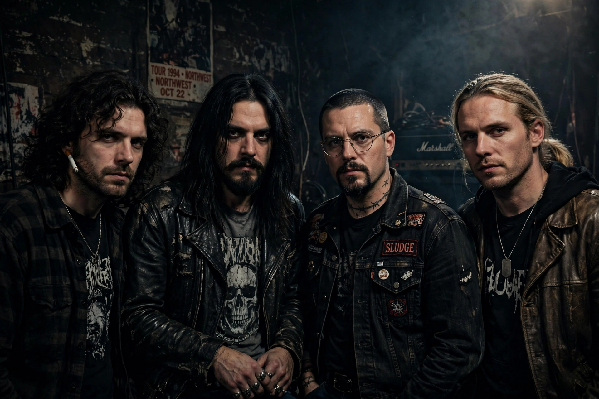

| Alice in Chains | |
|---|---|
 | |
| Origin | Seattle, Washington, U.S. |
| Years active | 1987–2002, 2005–present |
| Genres | Grunge, alternative metal, heavy metal, hard rock, acoustic rock |
| Labels | Columbia, Virgin/EMI, BMG |
| Members | Jerry Cantrell, Sean Kinney, Mike Inez, William DuVall; Layne Staley, Mike Starr (former) |
Alice in Chains (often abbreviated as AIC) is an American rock band formed in Seattle, Washington, in 1987 by guitarist/vocalist Jerry Cantrell and drummer Sean Kinney. The band rose to international fame with the grunge movement and is known for the distinctive harmonised vocals of Cantrell and original singer Layne Staley, and for a sound darker and more metal-influenced than its Seattle peers.
With bassist Mike Starr, the band signed to Columbia Records and released Facelift (1990), whose single "Man in the Box" became a breakthrough. The acoustic EP Sap (1992) showcased their vocal harmonies; Dirt (1992), featuring "Would?", "Rooster" and "Down in a Hole", dealt frankly with Staley's heroin addiction and is regarded as their masterpiece. The EP Jar of Flies (1994) debuted at number one — the first EP ever to do so — and the self-titled album followed in 1995, plus an acclaimed MTV Unplugged performance in 1996.
Staley's addiction curtailed touring, and after his death in April 2002 the band went on hiatus. Alice in Chains reformed in 2005 with singer William DuVall and released Black Gives Way to Blue (2009), The Devil Put Dinosaurs Here (2013) and Rainier Fog (2018). The band has sold more than 30 million records worldwide.
Soundgarden · Pearl Jam · Alternative rock · Pacific Northwest
From Wikipedia, the free encyclopedia (recreated from memory).